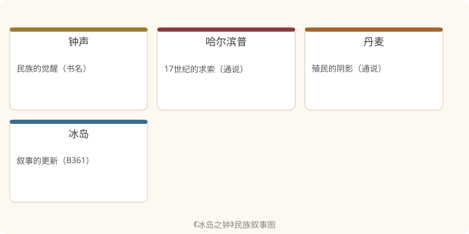

冰岛之钟
一、基本信息
| 作者 | 哈尔多尔·拉克斯内斯 |
|---|---|
| 成书/出版 | 1943-46年（Britannica B361：Íslandsklukkan (1943-46)——三部曲） Halldor Laxness — Encyclopaedia Britannica（百科全书） |
| 国别/地区 | 冰岛 |
| 时代 | 近代 · 20世纪40年代 |
| 体裁 | 长篇小说（三部曲） |
| 语言 | 冰岛语 |

《冰岛之钟》民族叙事图（主题·结构图）
二、创作背景
Britannica（B361）：Íslandsklukkan——三部曲（'Iceland's Bell'）。
Britannica（B361）：拉克斯内斯——1955诺奖——'renewed the great narrative art of Iceland'。
题材（通说待核）：17世纪冰岛——约翰·哈尔滨普的'钟声'与民族觉醒。
三、内容脉络
（通说待核）第一部：冰岛之钟；第二、三部：钟声的余波（卷名通说待核）。
（通说待核）饥饿、丹麦统治与'财宝'传说。
四、主要人物表
| 人物 | 身份 | 说明 |
|---|---|---|
| 约翰·哈尔滨普 | 求学者 | （通说待核） |
| 斯诺里·坡尔 | 压迫者 | （通说待核） |
五、主题与艺术特点
- 17世纪冰岛的殖民史（通说待核）。
- 民族叙事的更新（B361：诺奖引语）。
- 苦难与传说（通说待核）。
六、影响与评论
- Britannica：1955诺奖（B361）。
Halldor Laxness — Encyclopaedia Britannica（百科全书） - Britannica：'renewed the great narrative art of Iceland'（B361）。
Halldor Laxness — Encyclopaedia Britannica（百科全书）
七、阅读建议
难点
- 17世纪冰岛历史。
- 三部曲的卷次。
- 《冰岛之钟》中译本（人民文学等——通说待核）。
- 冰岛文原版。
拉克斯内斯史诗篇；与《独立的人们》对读。
八、待核实
- 三部卷名核对（通说）。
- 哈尔滨普人名核对（通说）。
- 1943-46出版细节待核（B361口径）。